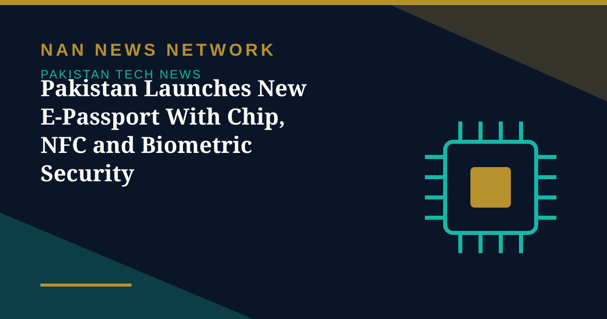

Pakistan Launches New E-Passport With Chip, NFC and Biometric Security

Pakistan has introduced a new e-passport featuring advanced chip technology, biometric security and faster identity verification, according to the Directorate General of Immigration and Passports. The new passport began issuing on October 23, 2026, and is designed to bring Pakistan's travel documentation in line with modern international standards.
What is inside the new passport
According to the directorate, the e-passport incorporates a modern electronic chip and Near Field Communication (NFC) technology to improve the protection of personal and biometric information. The document also features laser engraving and an updated design intended to strengthen security and make passports harder to forge.
Why it matters for travellers
The introduction of the e-passport is expected to facilitate faster identity verification and streamline immigration procedures at airports and border crossings. The directorate says the passport incorporates data encryption in line with standards set by the International Civil Aviation Organization (ICAO), measures intended to improve the security and reliability of Pakistan's travel documents.
A wider digital identity push
The e-passport rollout fits a broader shift towards chip-based, machine-readable travel documents worldwide, where border systems increasingly read biometric data directly from the document rather than relying on paper-based checks. For Pakistani travellers, the change promises smoother processing at international checkpoints as more countries adopt compatible e-passport readers.
Applicants should check the directorate's official channels for the application process and any updated fee schedule for the new document.
Sources: ProPakistani and Directorate General of Immigration and Passports, October 30, 2026.
More on Pakistan Tech News
- Pakistan Targets 50% Local Value Addition in Mobile Phone Manufacturing
- PTA Fines Mobile and Internet Firms Over Rs3.41 Billion Over Consumer Complaints
- PTA Warns of Rising 5G Security Risks as Cyber Alerts Top 10,000
- Pakistan Internet May Slow Until November 2 as AAE-1 Cable Undergoes Repairs
- PM Sets November Deadline for Alibaba-Backed AI and Digitalisation Projects
- Pakistan's 5G Now Reaches 24 Cities After $509 Million Spectrum Auction
- Pakistan Announces Urdu AI Model 'Buraq' to Keep National Data at Home
- PM Launches Two-Year Drive to Give 500,000 Chromebooks to Talented Students
- Pakistan to Host UN Space Technology Conference on Early Warnings and Climate Action
- PAK-US Tech Connect 2026 Takes 16 Pakistani Tech Firms Across America
- Pakistan Wins 11 Awards at the ASOCIO Digital and AI Awards 2026
- Pakistan Showcases AI Innovations at Abu Dhabi's AI Everything Global 2026